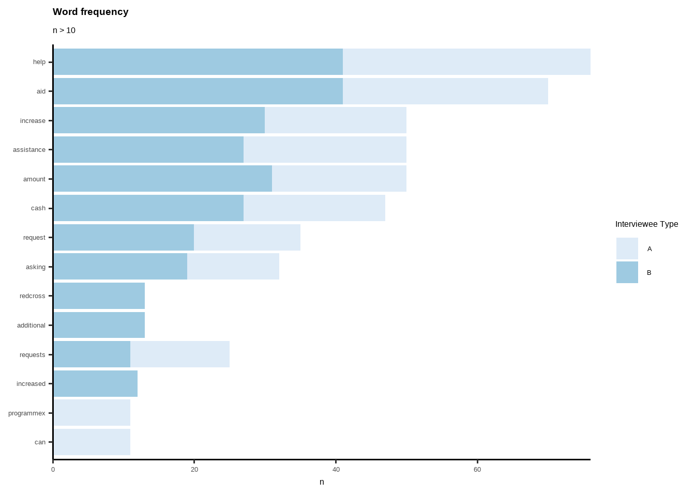
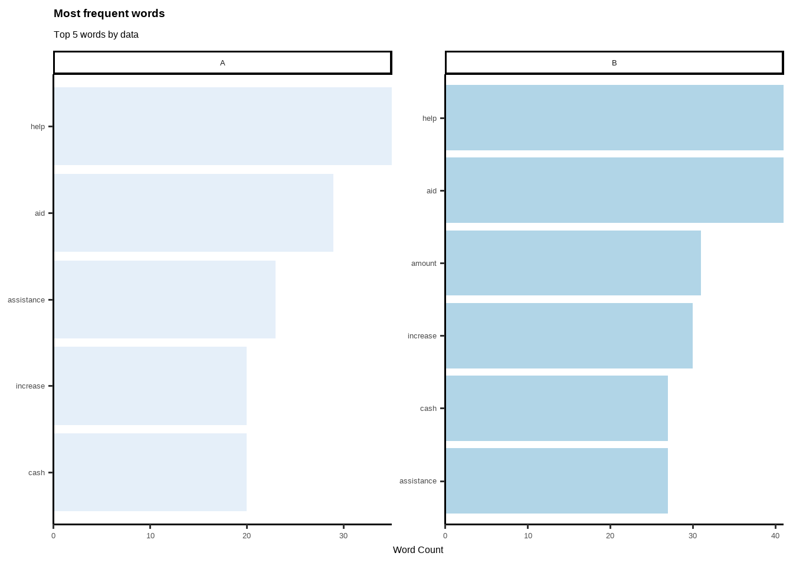
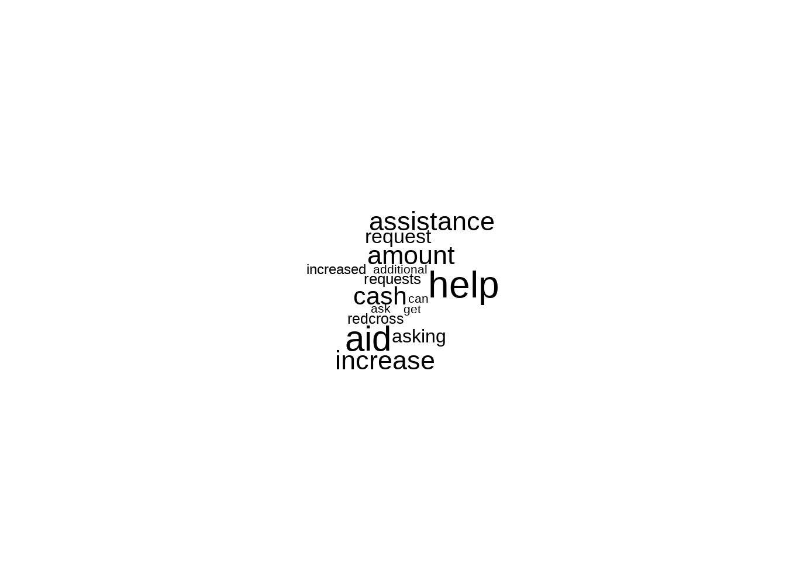
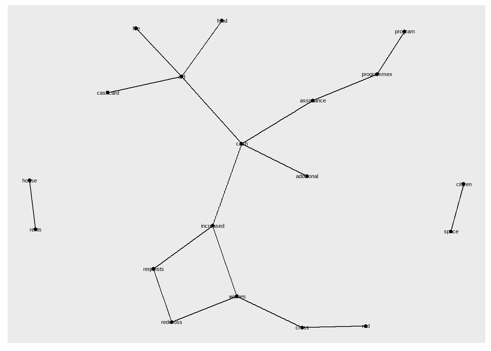
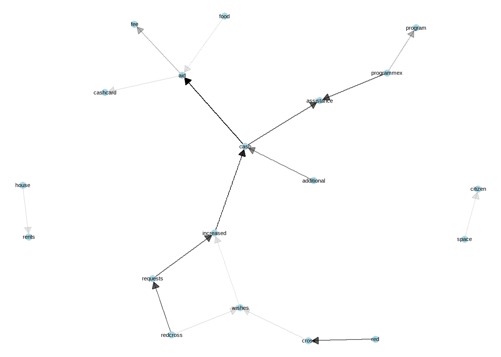
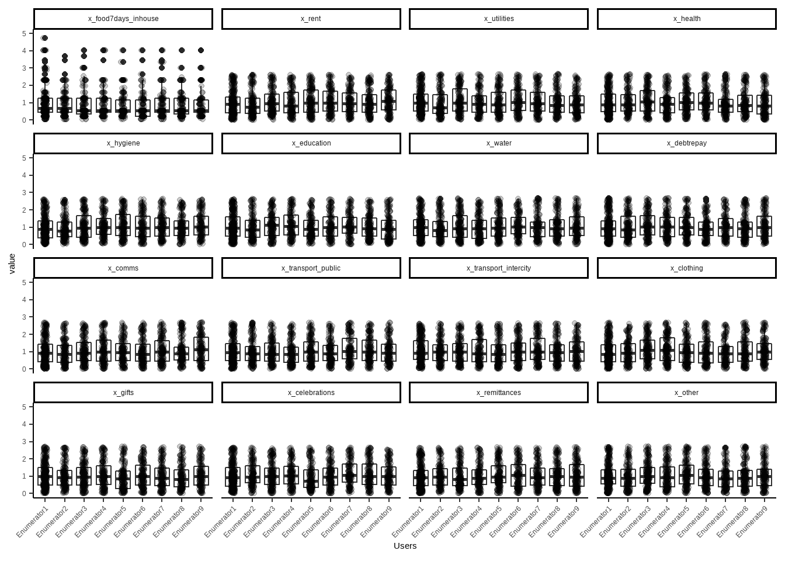
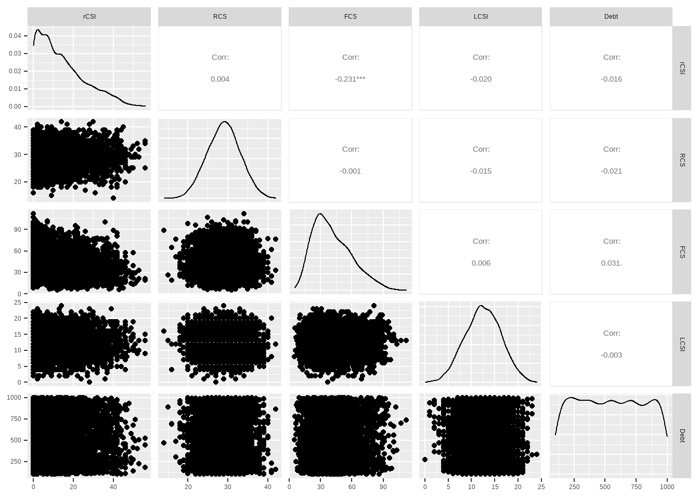
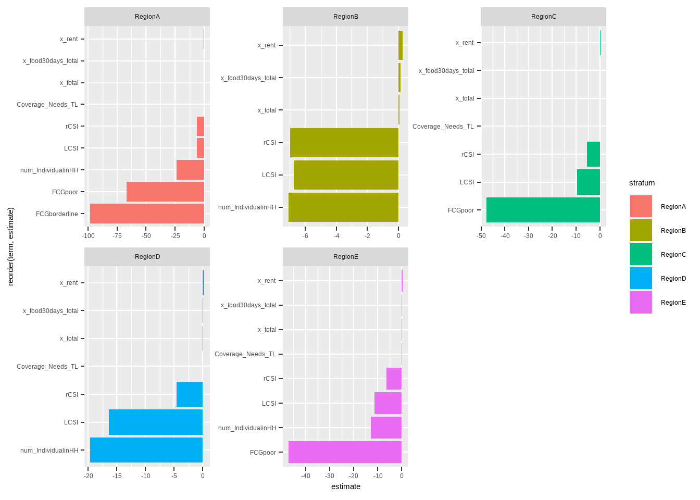
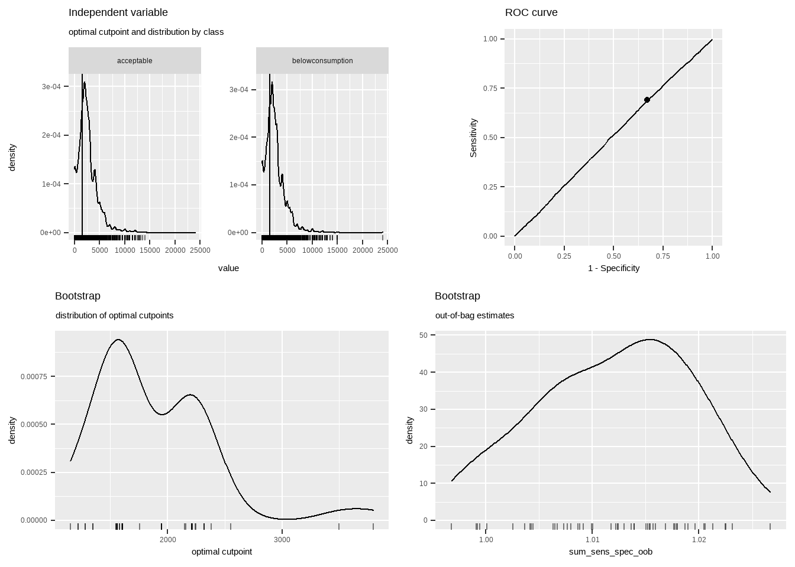
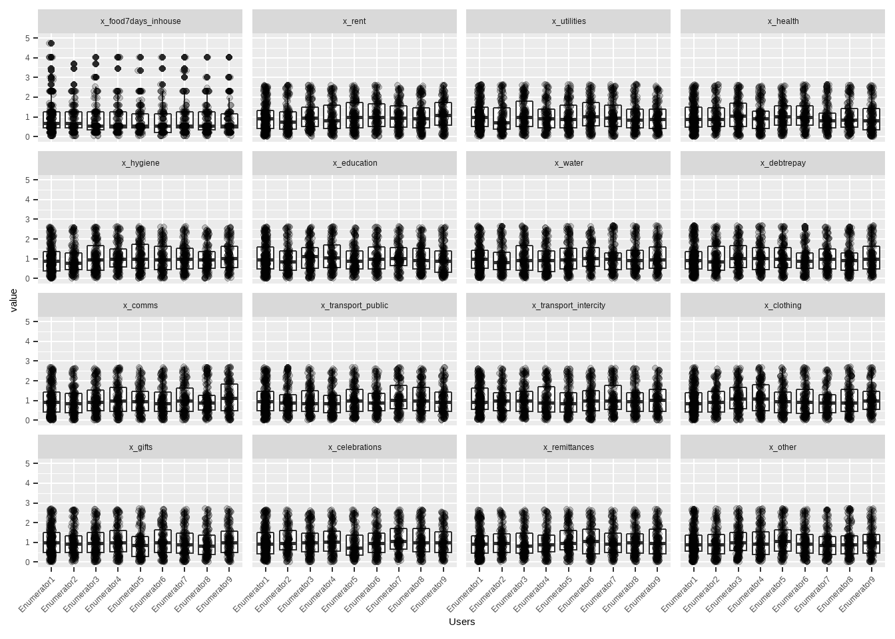

Chapter 6 Inferential Statistics
So far we have mentioned about log frames, indicators, questionnaire design, index calculations for log frames and dashboards. Even with knowledge of these aspects and few field experience and operational design skill set, one can become very skilled M&E Data Analyst. Also analyst needs to have an idea about minimum expenditure baskets, programme design and propsals, a humanitarian programme cycle mentality, general knowledge of CEA, registiration and financal systems (for cash-based). In this section, we will bring some data science element.
6.1 Text Mining
I found that including “more comments from interviewee” is a extremely useful question to add to PDMs, or to any other survey no matter what the modality of data collection is. These columns gives you incredible insights with text mining techniques. Check following examples made by dummy data. In Ukraine when I was in a mission with ICRC, analyzing these columns give me more insight than any other person or field monitoring assistants.
Check “TextMining” excel file. Coding and cleaning these variables are easy. If these comment columns are not in English, just go to google translate and copy-paste translated versions. Add them in a cell, disaggregate them by authors from your main data before translation and enjoy your analysis and very useful insights.
library(dplyr)
trx <- read_xlsx("TextMining.xlsx")
trx1 <- as_tibble(trx) %>%
mutate(document = row_number()) Tokenization
library(dplyr)
library(tidytext)
#Tokenization
trx2 <- trx1 %>%
unnest_tokens(word, Text) %>%
group_by(word) %>%
#filter(n() > 10) %>%
ungroup()Stopwords
#Stopwords
library(stopwords)
library(dplyr)
library(tibble)
stopword <- as_tibble(stopwords::stopwords("en"))
stopword <- rename(stopword, word=value)
trx3 <- anti_join(trx2, stopword, by = 'word')Wordcount
#WordCount
library(dplyr)
word_count_TRX <- count(trx3, word, sort = TRUE)
word_count_TRX## # A tibble: 356 × 2
## word n
## <chr> <int>
## 1 help 76
## 2 aid 70
## 3 amount 50
## 4 assistance 50
## 5 increase 50
## 6 cash 47
## 7 request 35
## 8 asking 32
## 9 requests 25
## 10 redcross 23
## # … with 346 more rowsWordCount by Author
Here author can be different group; such as; females-males, elderly-younglings etc. Each groups reflection might differ from each other, thus it makes a good analysis of disaggregating texts by authors/attendees.
#Word Count by Auth
author_count_TRX <- trx3 %>%
count(Author, word, sort = TRUE)
author_count_TRX## # A tibble: 513 × 3
## Author word n
## <chr> <chr> <int>
## 1 B aid 41
## 2 B help 41
## 3 A help 35
## 4 B amount 31
## 5 B increase 30
## 6 A aid 29
## 7 B assistance 27
## 8 B cash 27
## 9 A assistance 23
## 10 A cash 20
## # … with 503 more rowsData Viz
#GRAPH
trx3 %>%
count(Author, word, sort = TRUE) %>%
filter(n > 10) %>%
mutate(word = reorder(word, n)) %>%
ggplot(aes(word, n)) +
geom_col(aes(fill=Author)) +
xlab(NULL) +
scale_y_continuous(expand = c(0, 0)) +
coord_flip() +
theme_classic(base_size = 12) +
labs(fill= "Interviewee Type", title="Word frequency", subtitle="n > 10")+
theme(plot.title = element_text(lineheight=.8, face="bold")) +
scale_fill_brewer() 
Data Viz by Disaggregation Level
#GRAPH BY AUTH
library(ggplot2)
trx3 %>%
count(Author, word, sort = TRUE) %>%
group_by(Author) %>%
top_n(5) %>%
ungroup() %>%
ggplot(aes(reorder_within(word, n, Author), n,
fill = Author)) +
geom_col(alpha = 0.8, show.legend = FALSE) +
scale_x_reordered() +
coord_flip() +
facet_wrap(~Author, scales = "free") +
scale_y_continuous(expand = c(0, 0)) +
theme_classic(base_size = 12) +
labs(fill= "Interviewee",
title="Most frequent words",
subtitle="Top 5 words by data",
x= NULL,
y= "Word Count")+
theme(plot.title = element_text(lineheight=.8, face="bold")) +
scale_fill_brewer() 
Adding New Stop Words
#NEW STOPWORDS
newstopwords <- tibble(word = c("eq", "eg"))
trx3 <- anti_join(trx3, newstopwords, by = "word")Word Cloud
#CLOUDWORD
library(wordcloud)
trx3 %>%
count(word) %>%
with(wordcloud(word, n, max.words = 15))
Tokenizing by n-gram
library(dplyr)
library(tidytext)
library(tidyr)
library(ggraph)
library(igraph)
library(dplyr)
library(tidytext)
Daily_bigram <- trx %>% #this is raw first data
filter(Author == "A") %>% #select author here
unnest_tokens(bigram, Text, token = "ngrams", n = 2)
Daily_ngram_count <- Daily_bigram %>%
count(bigram, sort = TRUE)
# seperate words
bigrams_separated <- Daily_bigram %>%
separate(bigram, c("word1", "word2"), sep = " ")
# filter stop words and NA
bigrams_filtered <- bigrams_separated %>%
filter(!word1 %in% stop_words$word) %>%
filter(!word2 %in% stop_words$word) %>%
filter(!is.na(word1))
# new bigram counts:
bigram_counts <- bigrams_filtered %>%
count(word1, word2, sort = TRUE)
bigram_theory <- bigrams_filtered %>%
filter(word2 == "assistance") %>% #Select specific text here
count(word1, sort = TRUE)
trigram <- trx %>%
unnest_tokens(trigram, Text, token = "ngrams", n = 3) %>%
separate(trigram, c("word1", "word2", "word3"), sep = " ") %>%
filter(!word1 %in% stop_words$word,
!word2 %in% stop_words$word,
!word3 %in% stop_words$word,
!is.na(word1)) %>%
count(word1, word2, word3, sort = TRUE)
trigram %>% filter(n>3)## # A tibble: 7 × 4
## word1 word2 word3 n
## <chr> <chr> <chr> <int>
## 1 increased cash aid 14
## 2 additional cash assistance 11
## 3 redcross requests increased 7
## 4 redcross wishes increased 7
## 5 requests increased cash 7
## 6 wishes increased cash 7
## 7 red cross wishes 4Network Analysis
library(dplyr)
library(igraph)
# filter for only relatively common combinations
bigram_graph <- bigram_counts %>%
filter(n >= 2) %>%
graph_from_data_frame()
library(ggraph)
set.seed(123)
ggraph(bigram_graph, layout = "fr") +
geom_edge_link() +
geom_node_point() +
geom_node_text(aes(label = name))
library(ggraph)
set.seed(123)
a <- grid::arrow(type = "closed", length = unit(.1, "inches"))
ggraph(bigram_graph, layout = "fr") +
geom_edge_link(aes(edge_alpha = n), show.legend = FALSE,
arrow = a, end_cap = circle(.05, 'inches')) +
geom_node_point(color = "lightblue", size = 3) +
geom_node_text(aes(label = name)#, vjust = 1, hjust = 1
) +
theme_void()
Network analysis is one of the best way to understand the context. One can use this for qualitative data analysis, including focus group discussion or key informant interview data. Links between words, and their visibility (reflects how strong the tie between words) gives clear idea of what is the perspective from target population, what links with which concept etc. Lets interpret this network. Cash is in the middle, very important finding, reflects that over all other phenomenon, cash comes first. Than we see “space-citizen”, citizenship of space is mentioned a lot but is not linked with other phenomenons. “Requests-Wishes” linked with increased -which eventually lined with cash and with additional reflects that people are asking from red cross to increase cash amount. We can see that programmex is a cash assistance programme. Cash linked with aid- then linked with food, fee and cashcard. So there is a card, people links food with cash assistance. Also, house rents are linked and on its own, we can emphasis that people are having trouble with house rent, stand alone issue on the left hand side.
Just–wow.. Tons of information just from one variable. Imagine you are monitoring and evaluation data analyst and new to a concept, and you see this! Now you have deeper understanding of what is going on with the context. Use it! Deeper understanding leads to more accurate quantitative data analysis. Great start for a data analyst for the mission.
6.2 Correlations
Correlation is a bivariate analysis that measures the strength of association between two variables and the direction of the relationship. In terms of the strength of relationship, the value of the correlation coefficient varies between +1 and -1. A value of ± 1 indicates a perfect degree of association between the two variables. As the correlation coefficient value goes towards 0, the relationship between the two variables will be weaker. The direction of the relationship is indicated by the sign of the coefficient; a + sign indicates a positive relationship and a – sign indicates a negative relationship. Usually, in statistics, we measure four types of correlations: Pearson correlation, Kendall rank correlation, Spearman correlation, and the Point-Biserial correlation. (This paragraph is taken from statisticssolutions.com/!)
So, you can select proper correlation method, depending on your data and distribution of your variables. I usually use “performanceanalytics” and “ggpairs” to have a quick look correlations between numeric variables. Thus, analyst can have an idea about structure (hidden meanings) of the data. First step is to always check correlations.
In humanitarian sector, you expect several correlations to be there for most of the time. Let me quickly introduce those correlation types to be expected. If you don’t see those correlations, quickly check and have a discussion with the person who is in charge of data collection and with enumerators. Try to understand what/which trainings are given to the enumerators before data collection and try to understand if enumerators have common understanding of questions and their purposes.
rCSI (reduced coping strategy) and FCS (food consumption score) must have negative correlation.
Food expenditure (check per capita too) and FCS may have positive correlation.
Debt and LCSI (livelihood coping strategy index) may have positive correlation. Tho “debt” is a very complex phenomenon, it still gives you an insight with correlations. Always good idea to check on that vs. other variables.
rCSI and LCSI usually have positive correlation.
library("PerformanceAnalytics")
PAB %>% dplyr::select(rCSI,RCS,FCS,LCSI,Debt) %>% chart.Correlation(., histogram=TRUE, pch=19,method = "spearman")
library("GGally")
PAB %>% dplyr::select(rCSI,RCS,FCS,LCSI,Debt) %>% GGally::ggpairs()
6.3 Regressions
6.3.1 Linear Regressions
Regression analysis is a statistical tool used to explain the relationship between a response (dependent, outcome) variable as a function of one or more predictor (independent) variables.
Multiple linear regression is an extension of simple linear regression used to predict an outcome variable (y) on the basis of multiple distinct predictor variables (x).
With three predictor variables (x), the prediction of y is expressed by the following equation:
y = b0 + b1x1 + b2x2 + b3*x3
The “b” values are called the regression weights (or beta coefficients). They measure the association between the predictor variable and the outcome. “b_j” can be interpreted as the average effect on y of a one unit increase in “x_j”, holding all other predictors fixed (taken from STHDA.com, a fruitful source, go and visit!).
For humanitarian sector, here are some examples of relationships between independent and dependent variables:
Share of food expenditure or per capita food expenditure might be related with food security.
Income, when living in certain area or region, may be related to number of adults, copings and gender.
Expenditure, when being IDP or not, may be related to household assets, house type and individual capitas.
As you can see, even vulnerability can be related with many different aspects as well. In this key step, imagine a survey with 100+ questions, thus variables. So eventually you end up with trying to understand what effects which components and to which direction. There are several methods to see the links, eventually you will end up with mediation affects, which is inevitable. Humanitarian data is extremely complex due to all the variables are actually linked with each other, some more than others. Variable selection will be held in upcoming session. Here, I would like to reflect few key important tricks about regressions.
6.3.1.1 Sampling Layers and Regression
Let’s say, you will build a regression and try to predict income, or, to understand which variables have significant affects on income. Your sample is representative over regions, thus, you believe that regions differs from each other in terms of socio-economical attributes such as livelihoods, expenditures, seasonality etc.
For these models do not stick with independent variables as this is for an examples to reflect disaggregating (building different regressions) over sampling layers, or any other categorical variable that you think as they have different profiles (will have different regression outcomes). In the first example we will not build different regressions for each category, and in the second one we will build different models for different categories. Check how models are different from each other. This is one of the key knowledge for humanitarian data analysis.
In the first regression model below, you can see that we are trying to understand which variables have significant effect on income. We did not disaggregate data by regions, thus most of the variables seems significant except for FCG borderline and poor. Also, please kindly remember their estimated affect on the impact such as for x_rent it goes as 3.689e-01.
model_simple <- lm(Income~LCSI+rCSI+FCG+x_total+Coverage_Needs_TL+x_food30days_total+x_rent+num_IndividualinHH, data = pdmbt)
summary(model_simple)##
## Call:
## lm(formula = Income ~ LCSI + rCSI + FCG + x_total + Coverage_Needs_TL +
## x_food30days_total + x_rent + num_IndividualinHH, data = pdmbt)
##
## Residuals:
## Min 1Q Median 3Q Max
## -11985.8 -929.7 -154.4 703.4 18190.2
##
## Coefficients:
## Estimate Std. Error t value Pr(>|t|)
## (Intercept) 1.290e+03 2.861e+01 45.095 < 2e-16 ***
## LCSI -9.550e+00 1.111e+00 -8.599 < 2e-16 ***
## rCSI -6.002e+00 3.189e-01 -18.819 < 2e-16 ***
## FCGborderline -1.723e+01 2.425e+01 -0.711 0.477
## FCGpoor -3.328e+01 2.417e+01 -1.377 0.169
## x_total 7.209e-02 1.781e-03 40.477 < 2e-16 ***
## Coverage_Needs_TL 1.976e-02 2.795e-03 7.069 1.61e-12 ***
## x_food30days_total 9.957e-02 3.357e-03 29.656 < 2e-16 ***
## x_rent 3.689e-01 8.433e-03 43.737 < 2e-16 ***
## num_IndividualinHH -1.408e+01 1.929e+00 -7.298 3.02e-13 ***
## ---
## Signif. codes: 0 '***' 0.001 '**' 0.01 '*' 0.05 '.' 0.1 ' ' 1
##
## Residual standard error: 1561 on 25000 degrees of freedom
## (3 observations deleted due to missingness)
## Multiple R-squared: 0.3145, Adjusted R-squared: 0.3142
## F-statistic: 1274 on 9 and 25000 DF, p-value: < 2.2e-16In the following regression, divided (grouped) by regions (stratums). We filtered only significant variables in the graphs. Lets give comments on Region A. Most significant two variables are FCG poor and borderline, negatively effects income. But in the previous (overall) regression, these values are not even significant. Woa! Changes a lot right? But it does makes sense. In the beginning you clustered you sample, believing that regions are, as their profile, different from each other. Thus, your regression models should be conducted for each of them, resulting different outcomes.
Let’s compare RegionB and RegionC. In RegionB, number of individual in household plays exceptional role on income, in a negative direction. For RegionC, having poor food consumption is significant and extremely strong.
library("broom")
pdmbt %>%
group_by(stratum) %>%
nest() %>%
mutate(model = map(data, ~lm(Income~LCSI+rCSI+FCG+x_total+Coverage_Needs_TL+x_food30days_total+x_rent+num_IndividualinHH, data= .) %>%
tidy)) %>% unnest(model) %>% filter(p.value < 0.5) %>% filter(term != "(Intercept)") %>%
ggplot(aes(x = reorder(term,estimate), y=estimate, fill=stratum)) + geom_col() + coord_flip() + facet_wrap(~stratum, scales = "free")
So, in humanitarian data analysis with regressions, or any other statistical analysis, there is two take aways from that analysis:
Get your hands to sampling methodology if you did not involved with process. It is extremely important for data analysis step.
Try to build different regressions for significant variables and clusters, try to capture if there is any significant differences between them.
6.3.2 Logistic Regression
Let’s build a logistic regression using same model above where we try to understand which variables are significant in retro of income of the household. Income and expenditure can be revert to binary versions with sensible thresholds. Income, threshold can be minimum wage, or something equivalent to that and for expenditure, minimum expenditure baskets or world banks thresholds (5$ in day per capita) could be your threshold. One simply tries to draw those thresholds to see whether household is above or below those lines, and may mark them as poor - non poor etc.
Let’s try to get a sensible threshold for income, and then convert it to a binary variable. For this analysis, I am going to use cutpointr (source: https://cran.r-project.org/web/packages/cutpointr/vignettes/cutpointr.html).
summary(pdmbt$Income)## Min. 1st Qu. Median Mean 3rd Qu. Max.
## 0 1400 2200 2566 3400 24000So median value is 2200 and mean is 2566, but what is the optimal cutpoint for it? An optimal threshold linked with some socio-economical indicator. I always like using food consumption - convert it to binary and use it as an input for cutpointr package.
library("cutpointr")
pdmbt$FCGBinary <- ifelse(pdmbt$FCG=="acceptable", "acceptable", "belowconsumption")
opt_cut_b <- cutpointr(pdmbt, Income, FCGBinary, boot_runs = 50)
summary(opt_cut_b)## Method: maximize_metric
## Predictor: Income
## Outcome: FCGBinary
## Direction: >=
## Nr. of bootstraps: 50
##
## AUC n n_pos n_neg
## 0.5078 25013 8261 16752
##
## optimal_cutpoint sum_sens_spec acc sensitivity specificity tp fn fp tn
## 1560 1.0178 0.4477 0.6893 0.3286 5694 2567 11248 5504
##
## Predictor summary:
## Data Min. 5% 1st Qu. Median Mean 3rd Qu. 95% Max. SD NAs
## Overall 0 0 1400 2200 2566.229 3400 6000 24000 1885.059 0
## acceptable 0 0 1500 2300 2592.795 3500 6000 14000 1886.649 0
## belowconsumption 0 0 1400 2200 2553.128 3400 6000 24000 1884.192 0
##
## Bootstrap summary:
## Variable Min. 5% 1st Qu. Median Mean 3rd Qu. 95% Max. SD NAs
## optimal_cutpoint 1150.00 1247.90 1560.00 1608.02 1869.66 2210.00 2474.47 3800.00 521.11 0
## AUC_b 0.50 0.50 0.51 0.51 0.51 0.51 0.51 0.51 0.00 0
## AUC_oob 0.50 0.50 0.50 0.51 0.51 0.51 0.52 0.52 0.00 0
## sum_sens_spec_b 1.01 1.01 1.02 1.02 1.02 1.02 1.03 1.03 0.01 0
## sum_sens_spec_oob 1.00 1.00 1.01 1.01 1.01 1.02 1.02 1.03 0.01 0
## acc_b 0.41 0.42 0.45 0.46 0.47 0.51 0.53 0.60 0.04 0
## acc_oob 0.40 0.41 0.44 0.45 0.47 0.50 0.53 0.61 0.04 0
## sensitivity_b 0.21 0.44 0.51 0.67 0.62 0.69 0.78 0.80 0.13 0
## sensitivity_oob 0.22 0.43 0.50 0.67 0.61 0.69 0.78 0.80 0.13 0
## specificity_b 0.21 0.23 0.33 0.35 0.40 0.51 0.58 0.79 0.13 0
## specificity_oob 0.20 0.24 0.33 0.34 0.40 0.51 0.58 0.79 0.13 0
## cohens_kappa_b 0.01 0.01 0.01 0.02 0.02 0.02 0.02 0.03 0.00 0
## cohens_kappa_oob 0.00 0.00 0.01 0.01 0.01 0.01 0.02 0.02 0.01 0plot(opt_cut_b)
6.4 Some Key Visuals to Interpret
Personally, I always disaggregate data by key elements, to check region based distributions (or any cluster levels comes from sample). One trick here! If you have “enumerator” column in your data, which reflect which survey conducted by which enumerator, kindly see those distributions as well to see if any enumerator is collecting different values than others. In this phase, be careful of if regions are distributed to each enumerator. If that is the case, this trick won’t work. If the case is each enumerator (or FMA-field monitoring assistants) got random surveys from sample, you kind of expect that their values should be similar to each other. Lets see few examples.
#Selecting expenditure columns/variables.
#Very good example of how column naming is important.
#I can easly subset related columns by their names.
#I have limited y axis to 5, to have a better viz of box plots.
xx_expenditure<- (PAB %>% dplyr::select(starts_with("x_",ignore.case = TRUE)))
xx_expenditure <- scale(xx_expenditure)
xx_expenditure <- as.data.frame(xx_expenditure)
xx_expenditure$username <- PAB$Enumerator
xx_expenditure$username <- as.factor(xx_expenditure$username)
xx_expenditure_long <- melt(xx_expenditure, id = "username")
xx_expenditure_long %>%
ggplot(aes(x= username, y=value)) +
geom_boxplot() +
geom_jitter(width=0.1,alpha=0.2) +
xlab("Users")+
facet_wrap(~variable) +
theme(axis.text.x = element_text(angle = 45, hjust = 1)) +
ylim(0,5)
As you can see, value variable distributions of each enumerator or field monitoring assistants is similar. Thus we can have a conclusion of their training or data quality aligns well. If in a case you detect one or two enumerators distribution is different from others, do a small interview with them and ask them about differences, or to their managers. Very good step for understanding and linking operational part with data analysis. Believe me, they will stress about your finding, a bit. So go easy if you detect any operational gaps in data.
For regional or any other sample based cluster disaggregation, you can use graphs that reflected in “dashboard” phase. Box plots and density graphs are amazing tools to check.